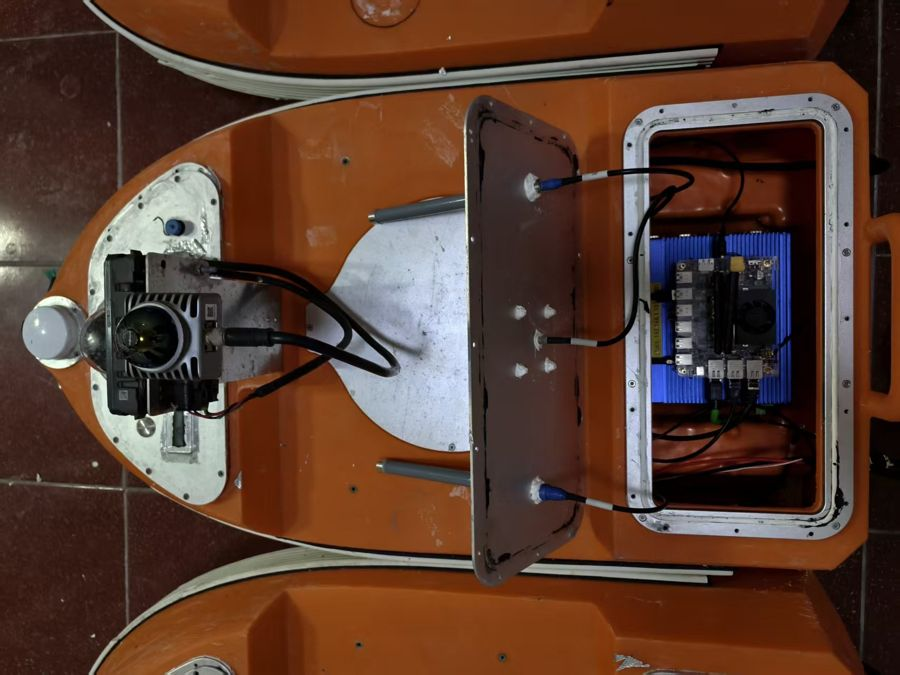
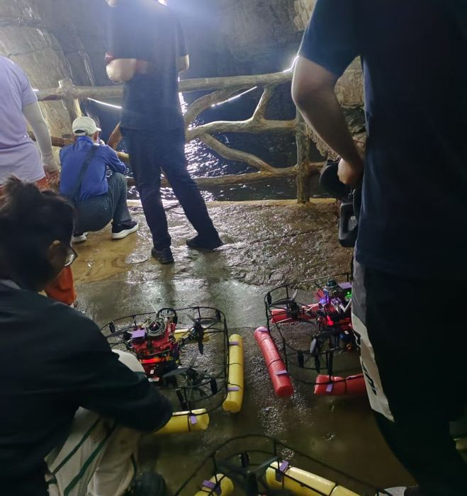

坎一身体撑不住
2025 年 4 月 19 日，北京亦庄举办了全球首个人形机器人半程马拉松，21 台机器人和上万名跑者一起出发。
- 2 小时 40 分
- 冠军天工 Ultra 的成绩。人类男子冠军用时约 1 小时 2 分。
- 换了 3 次电池
- 冠军途中换了三次电池，摔倒一次，是唯一在 3 小时 10 分关门时间内完赛的机器人。
- 6 台
- 21 台里只有 6 台跑完全程。很多机器人过热、摔倒，全都需要团队帮忙：遥控引导、换电池、喷冷却剂，甚至用胶带修补。
一年后变化很快。2026 年同一场比赛有 300 多台机器人参赛，荣耀的“闪电”自主导航跑出 50 分 26 秒，快过人类半马世界纪录，不过它在离终点约 200 米处也摔了一跤。规则也变了：靠遥控的机器人，成绩要乘以 1.2；每台最多换三次电池。
来源：Beijing E-Town Half-Marathon，Wikipedia（汇总了赛事报道）；Realtime Mandarin，2026-04-25。两届数据均来自这两处。
跑得快了，但一场比赛只有一两个小时，还有一整支团队跟着。要在家里、医院、政务大厅连续工作几个月，是另一回事。
我们自己的实验走出实验室：海蚀洞里的 42 天
2025 年，我们团队三次登上烟台长岛的大黑山岛，在龙爪山下的海蚀洞里做多无人机与多无人艇的协同穿越实验，前后累计 42 天。
- 电池续航
- 电机螺旋桨 · 推进器
- 传感器激光雷达 · 相机
- 定位GNSS 天线 · IMU
- 计算单元机载电脑
整机像一串串联电路：任何一环出问题，整台就停。人扭了脚还能一瘸一拐走回家，机器人目前做不到。到了海上，每一环都被考验：
- 没有定位
- 动捕、高精度 GPS 都用不上，只能靠机上传感器自己算位置。
- 海水和盐
- 浪花打在相机和雷达上，视觉和雷达频频失效；岛离大陆 17 公里，海水盐度高，螺旋桨、电机被腐蚀。
- 风和浪
- 正赶上季风转换，大风大浪，船身有时被海水短暂淹没。
真实的代价是，无人机数次坠海，捞上来、拆开、烘干、修好，再飞。最后加了防水、防撞、防腐蚀三重改造，无人艇集群才无碰撞地穿过了海蚀洞。


海岛很美，工程很难忘。它也让我明白：今天的机器人身体，离“自己在外面长期干活”还很远。
讲者备注：来源与备用例子
来源：国家重点研发计划课题四《2025 年度进展报告》4.3 节：2025-08-23 至 08-29、09-07 至 09-29、11-03 至 11-14 三次赴大黑山岛，累计 42 天；距大陆 17 公里；防水、防撞、防腐蚀三重防护。无人艇搭载组件化 PNT 平台、北天四星全频天线、UM982 定位模块、Mid-360 激光雷达。
备用例子：修一次 3 万元（一位用户 20 万元买的人形机器人过门槛摔倒，髋关节减速器形变，换模组、全身校准，3 万元、10 天；Tech星球，《修一次3万块》，2026-03-05，个案）；Figure 机器人在宝马工厂每天 10 小时、干了 11 个月，前臂最常坏（Figure，2025-11-19，公司自述）。
在岛上，我们几个人就是这些机器人的“医院”：哪里坏了，自己拆、自己修。可要让机器人在社会里长期干活，不能每台身后都跟一个研发团队。
汽车能进入社会，靠的不只是车造得好，还因为有加油站、修车厂和驾校。机器人也需要这些。有意思的是，2025 年到 2026 年，这些东西在中国已经陆续冒出了雏形：
| 汽车有 | 机器人需要 | 已经出现的雏形 |
|---|---|---|
| 加油站、充电桩 | 能源站就近补能、换电 | 优必选 Walker S2 能 3 分钟内自己换电池（厂商称可 7×24 小时工作）。2026 世界人形机器人运动会的“机器人之家”设了 200 个充电柜，可同时充至少 1200 块电池。 |
| 修车厂、4S 店 | 机器人医院诊断、维修、更换零件 | 北京亦庄 Robot Mall 2025 年 8 月开业，三层是维保区。京东推出“机器人救护车”，承诺 1 分钟响应、2 小时上门、当日修好，全国 8 个维修中心。 |
| 驾校、驾照 | 机器人学校上岗前的训练和认证 | 全国运营中的具身智能训练场超过 70 个，另有 46 个在规划或建设。人社部 2026 年 9 月发布新职业“具身智能机器人应用技术员”。但机器人本身还没有“上岗证”。 |
| 车牌、行驶证 | 身份一机一码，可追溯 | 运动会推行“一机一码、一电池一码”，30 秒完成存取登记。深圳的无人配送车实行“一车一牌”（第三段细讲）。 |
| 标准件、国家标准 | 新本体模块化，坏一处只换一处 | 首批人形机器人国家标准已发布，2027 年 4 月 1 日实施，都是推荐性标准；跨厂家通用接口还没有。 |
来源：北京发布，2026-08-13；北京市科委；北京商报；IT之家；澎湃；科技日报；北京市经信局。
雏形有了，但还在洗牌。北京首钢园 2025 年揭牌的人形机器人数据训练中心，原计划放 108 台机器人，不到 18 个月，原运营方就撤走了设备，理由是数据质量没有达到预期。
一个新物种从来不是单独变强的，它需要适合生存的环境。